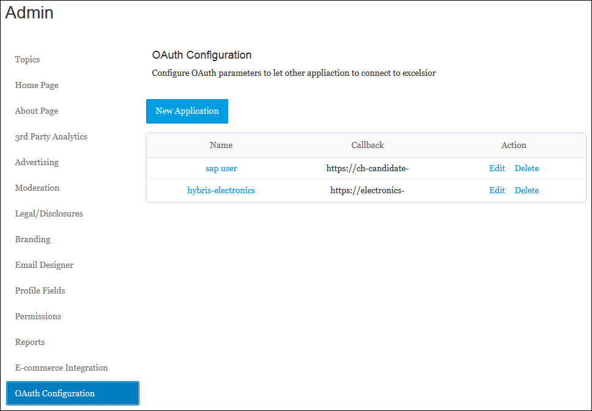
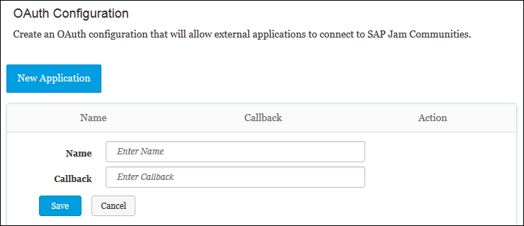
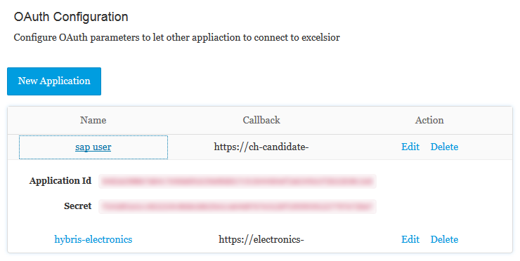

The SAP Jam Communities API calls require an access token for any POST,
PATCH, or DELETE calls in order to create, update, or delete resources. For GET calls to
retrieve a resource, use of the access token is optional, although permissions are more
restricted without it. This page describes how to get an access token for your API
use.
To set up OAuth authentication for the SAP Jam Communities API
- As the SAP Jam Communities administrator, click on your name at the top of any
page and select Admin from the context menu.
The SAP
Jam Communities Admin interface displays.
- From the left navigation sidebar, select OAuth
Configuration.
The OAuth Configuration
page displays, showing a catalog of the OAuth client applications that have
already been configured for your instance of SAP Jam Communities.
Figure 1. The OAuth Configuration page

- If no OAuth configurations have been set, create one by clicking New
Application.
The New Application
configuration form displays.
Figure 2. The OAuth Configuration page

- In the Name text box, enter a meaningful name for
the OAuth application configuration.
- In the Callback text box, enter the URL to the
callback page of the OAuth application.
Currently, the only
requirement of this URL is that it be to a secure HTTP (HTTPS)
URL.
- Once these two items are set, click Save to add
the configuration.
The configuration that you just set will be listed
in the OAuth Configuration catalog.
- With an application configured, click on the name of the application in the
OAuth Configuration catalog.
The information on
the application displays, showing the Application Id
and the Secret.
Figure 3. The OAuth Configuration page

Copy the Application Id and the
Secret values for later use.
- Call the POST /oauth/token API endpoint.
The full URL will
be https://<domain>/oauth/token, where "domain" is
the domain of your organization's SAP Jam Communities instance.
Set the following body parameters:
- grant_type: Use "password".
- client_id: Set the Application
Id from the OAuth
Configuration.
- client_secret: Set the Secret
from the OAuth Configuration.
- Username: Set the username of the user who will be
making the API calls.
- Password: Set the password of the user who will be
making the API calls.
For example:
{"grant_type": "password",
"client_id": " 127e2e56b6e67349a$6bade2fd33b77a6a1$826db9558c51346ce$3dca7dffe4",
"client_secret": " f88f1c7&2649372c47a5ad8d&523a63d9209cd8c621&1bc3987e0da89a57ecf0",
"username": "<user_name>",
"password": "<password>"}
This should produce a response much like the following:
{"access_token": "a8e05#d76120174b23112#74841f36e3e28ab11c#1ac1984911e8ef2899c93eb",
"token_type": "bearer",
"expires_in": 7200,
"created_at": 1453366854}
Append the "access_token" to your API calls, as listed in the SAP Jam Communities OData API Reference.